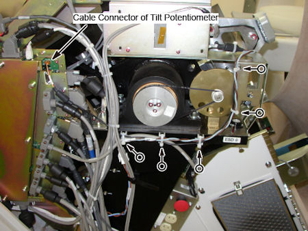
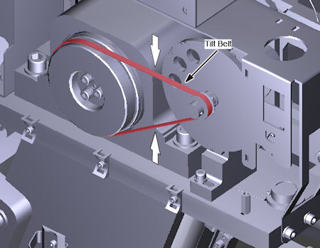
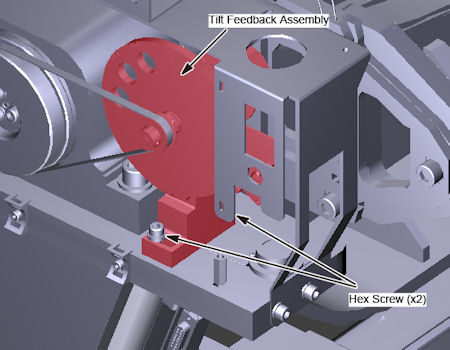
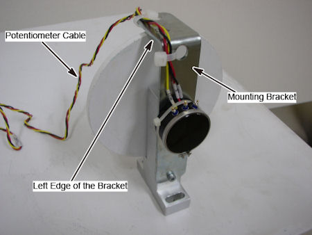
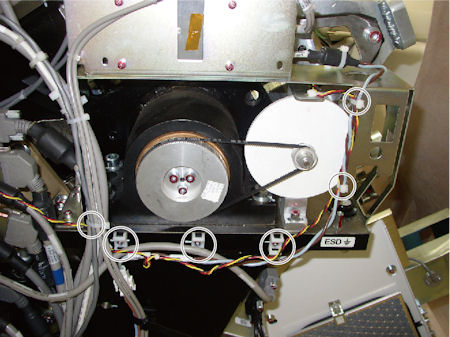
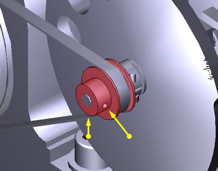
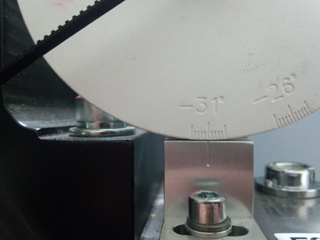

Operating Documentation
Direction 5193574-800, Rev# 22
LightSpeed 7.X Service Methods
Module Version 3.0, Version Date 6/12/15
Operating Documentation |
| Required Persons | Preliminary Reqs | Procedure | Finalization |
|---|---|---|---|
| 1 |
This procedure describes the steps to replace the Tilt Feedback Assembly.
| Last Revised: | June 12, 2015 |
| Item | Qty | Effectivity | Part# | Manufacturer | |
|---|---|---|---|---|---|
| ESD Wrist-Band | 1 | - | - | - | |
| 3 mm hex key | 1 | - | - | - | |
| Item | Qty | Effectivity | Part# | Manufacturer |
|---|---|---|---|---|
| Tie-wraps | - | - | - |
| Item | Qty | Effectivity | Part# | Manufacturer | |
|---|---|---|---|---|---|
| Gantry Tilt Feedback Assembly | 1 | - | 5485694 | - | |
| ||||
| CRUSH HAZARD. | ||||
| THIS SERVICE PROCEDURE REQUIRES THE GANTRY TO BE TILTED ALL THE WAY BACK IN ITS MINUS 30 DEGREE POSiTION AND PLACED ON ITS MECHANICAL STOPS. | ||||
| ||||
| Potential for Shock | ||||
| Voltage is present. | ||||
| Use proper lockout/tagout procedures before replacing components. See safety menu of Service Document gui for appropriate procedures. |
| ||||
| Follow ALL required safety and PPE procedures customary for your organization when working on this product. | ||||
| Condition | Reference | Effectivity |
|---|---|---|
Only trained service personnel should service the GE CT Scanner. | - | - |
If the gantry is not at zero tilt, use the gantry control panel to tilt the gantry close to zero tilt.
| NOTE: | The tilt angle does not have to be exact. At zero tilt, there is more area for servicing the Tilt Pot Assembly. |
Move the table up to bore level and all the way back.
Stop the rotor of X-ray tube in case of Liquid Bearing Tube before HVDC off. Refer to Liquid Bearing Tube Rotor stop procedure for details.
Remove gantry right side cover and disable Axial drive, HVDC and 120VAC service switches from the Service Switch Panel.
Refer to Replacement → Gantry → Enclosure → (Cover Removal Procedures).
Remove the Gantry left side, top, front and rear covers.
Turn on the gantry 120VAC service switch, and tilt the gantry all the way back to the tilt stop blocks using Tilt Service Switch with Tilt enable.
Turn off the gantry 120VAC service switch.
Cut any tie-wraps holding the cable of the potentiometer to the gantry frame.
Illustration 1: Potentiometer Cable

Disconnect the cable connector of potentiometer from TGPG.
Press the tilt belt in middle of the belt span, and make sure of the degree of the tightened belt.
| NOTE: | The new assembly will need to be adjusted to the same tension. |
Illustration 2: Tilt Belt

Loosen two (2) hex screws holding the tilt feedback assembly to the gantry frame, to remove tension from the belt, and remove the belt.
Remove the two (2) hex screws, and remove the tilt feedback assembly from gantry.
Illustration 3: Tilt Feedback Assembly Removal

Set the potentiometer cable along the left edge of the mounting bracket, and fix the cable to the bracket using tie-wraps.
Illustration 4: Tilt Feedback Assembly

Put the tilt feedback assembly in place, and install the two hex screws loosely to hold the tilt feedback assembly in place.
Position the belt on and around the tilt motor pulley and the small pulley of potentiometer.
Move the tilt feedback assembly position to maintain a proper degree of tension (the same tension as before) for tilt belt.
Tighten the two (2) hex screws to the following torque values.
Table 1: Torque Values
| 7.9 N-m | 5.8 lb-ft | 70 lb-in | 80.8 Kg-cm |
Connect the potentiometer cable to the TGPU.
Using tie-wraps, secure the Tilt Pot cable to the gantry.
Illustration 5: New Tilt Potentiometer Cable

Using a 1.5 mm hex key, loosen the two hex screws on the front of the tilt pot pulley (do NOT remove the screws). This allows the tilt indicator disk to freely rotate for alignment.
Illustration 6: Hex Screws on Tilt Pot Pulley

Clear all tools from the gantry.
Using the Service Switches, turn ON 120 VAC, Service Mode and Tilt Enable.
Push down on the Tilt Service Switch to tilt the gantry backwards (BWD) to the mechanical stops at -31° degrees.
| NOTE: | The table position may inhibit tilt motion if it is in the interference matrix. Reposition the table to continue tilt. |
Rotate the Tilt Indicator Disk to -31°.
Illustration 7: Alignment at -31°

Using a 1.5 mm hex key, tighten the two hex screws on the front of the tilt pot pulley. Refer to Tilt Feedback Assembly Installation, Step 8.
Perform Tilt Characterization. Check for possible interference.
Go to Service Desktop - Calibration - Mechanical Calibration - [Characterize Tilt]
Follow on screen instructions.
| NOTE: | When not in the Service Mode, normal tilt button function provides 0.5 degrees per button press, which is not enough resolution for proper characterization. On the Service Panel, set Service Mode (S4) switch ON to enable a fine tune adjustment of the tilt angle. Remember to turn S4 OFF when done. |
| NOTE: | Prior to Tilt Characterization, the tilt reading maybe greater than the 30 degrees limit. This will inhibit the tilt function from the gantry control panel. If this occurs, use the Tilt (S10) Service Switch to tilt the gantry for characterization. |
Tilt the gantry back to home position and confirm the Tilt Indicator Disk lines up at zero degrees.
Install Gantry Front and Rear cover.
At Service Switch Panel, turn OFF Tilt Enable and Service Mode. Turn ON Axial Enable and HVDC.
Re-install Left and Right Side covers.
Run the System scanning test from the Functional Checks procedure list.
Run the Quality Assurance test from the Functional Checks procedure list.
Save System State.